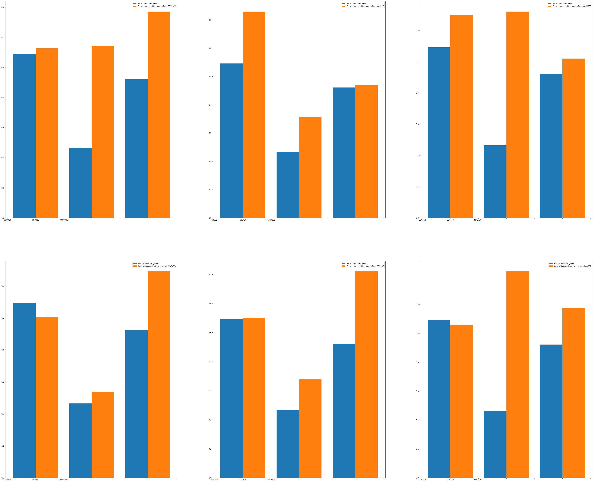

Gene Expression Analysis - Primer Design (2022 - Present)
Advisor - Debashish Sahoo
Performed BECC (Boolean Equivalent Correlated Clusters) Analysis on known White Blood Cell biomarker gene - PTPRC
Found a set of seven biomarker genes ('PTPRC','EVI2B','GMFG','CD53','HCLS1','ITGB2','LAPTM5') for White Blood Cells, and proved via ROC-AUC analysis that the BECC analyzed genes are better from genes obtained via other methods such as correlation.
Manuscript for this project will be uploaded soon.